本页面汇总了 6 张长截图（共 179 页 PPT）的完整内容：每份报告独立成篇，既有逐章润色提炼的文字总结，也通过"完整页面图库"原样保留每一页截图，信息密集的图表页在正文中以截图呈现，确保内容不遗漏。
2025 年 3 月教育部启动高校学生就业能力提升"双千"计划（1000 个微专业 + 1000 门职业能力培训课程），将微专业分为急需紧缺型、应用技能型、交叉复合型三类，并要求"加强效果跟踪，建立淘汰退出机制"。六份报告恰好构成一个完整的生态：
《高校微专业建设探索与实践——以北航人工智能微专业建设为例》——从 AI 通识课到 AI 微专业的"通专融合"路径，5W1H 方案设计与沙河联盟跨校共享实践。
阅读总结 →教育部"双千"计划首次把微专业纳入国家分类体系，分为三类：急需紧缺型（对标 AI、低空经济等 12 个急需紧缺领域 60 个重点方向，有产业目录可依）、应用技能型（对接具体岗位技能，可与企业职业技能认证衔接，成效最直接）、交叉复合型（由两个及以上学科交叉产生新的知识组合，如数字人文、智慧法治、AI+传播）。交叉复合型既无现成岗位可对标、也无成熟专业可借鉴，要创造原本不存在的知识组合，因此最难做。政策同时给出五个操作性要求：支持学生通过线上线下方式学习专业课程群 3—10 门课程；小学分、高聚焦、精课程、跨学科、灵活性。
628 所高校开设微专业；2654 个微专业面向 2025 届毕业生（教育部首批遴选入库）；7.4 万毕业生实际修读；超八成修读学生自评能力提升（数据来源：教育部 2025 年 7 月 2 日发布；国家智慧教育平台同期上线 1455 门优质教学资源）。地方加速：浙江 50 所本科、38 所职业院校开设微专业 881 个；四川 2026 年新备案微专业 544 个。教育部已明确要求"加强效果跟踪，建立淘汰退出机制"——数量不再是成绩，质量才是。
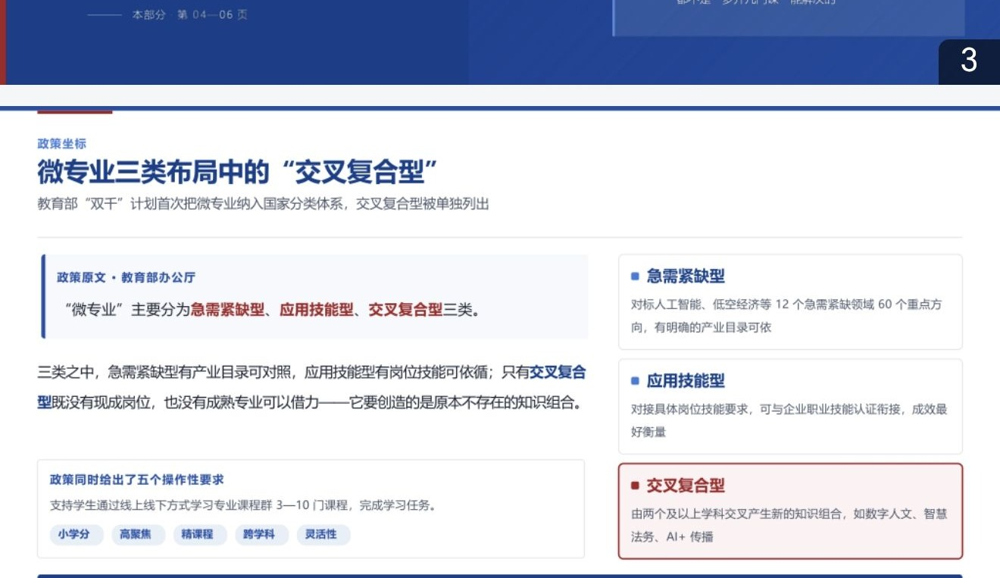
2022 起步·少而精（首批 7 个：创意传播、关键软件安全保障技术、公益慈善等）→ 2023 扩容·专业补充（新增 3 个）→ 2024 规范·交叉融合（印发《微专业建设与管理办法》，首批"AI+"4 个方向）→ 2025 迭代·AI+升级（办法修订，"AI+X"扩至 8 个方向，20 个项目入库学信网）→ 2026 成熟·全链条育人（累计立项 61 个、覆盖 28 个学部院系，AI+外语教师教育、AI+无人机应用立项）。
《华东师范大学微专业建设与管理办法》（2024 印发、2025 修订）明确四件事：压实主体责任（学部院系全面负责招生、培养、管理，授课计入本科教学工作量）；开放招生对象（校内、校外与社会公众，分类设立收费标准）；打通学分与免修（本科生院与终身教育处协同推进教学运行、学分认定、免听免修）；统一系统与证书（统一报名管理系统与证书样式）。六项基本原则：聚焦关键需求、精炼知识体系、促进交叉融合、追求灵活创新、坚持兴趣驱动、开放优质资源。制度先立，规模才敢放。
通用底座：AI 基础课 5 门任选 2—3 门（共 36 学时/2 学分）：人工智能导论、深度学习与大模型、大语言模型应用与实践、智能系统设计与应用、人工智能伦理与治理；专业插件：X 部分 2—3 门由各方向自主设计。方向覆盖 2024 首批（AI+数学、AI+地理、AI+美术、AI+传播）→ 2025 新增（AI+磁共振、AI+商学、AI+药学、AI+金融）→ 2026 立项（AI+外语教师教育、AI+无人机应用）。修读办法：不设先修课程、允许零基础、面向非信息类所有专业；总学分 10—16 分，修读年限建议 1—1.5 学年；AI 基础课可认定公共计算机课程学分，X 部分可认定专业教育/跨专业选修/通识教育学分（不超过 4 学分）。底座共通，插件各异：课程可以复用，但每个方向的出口必须是自己的。
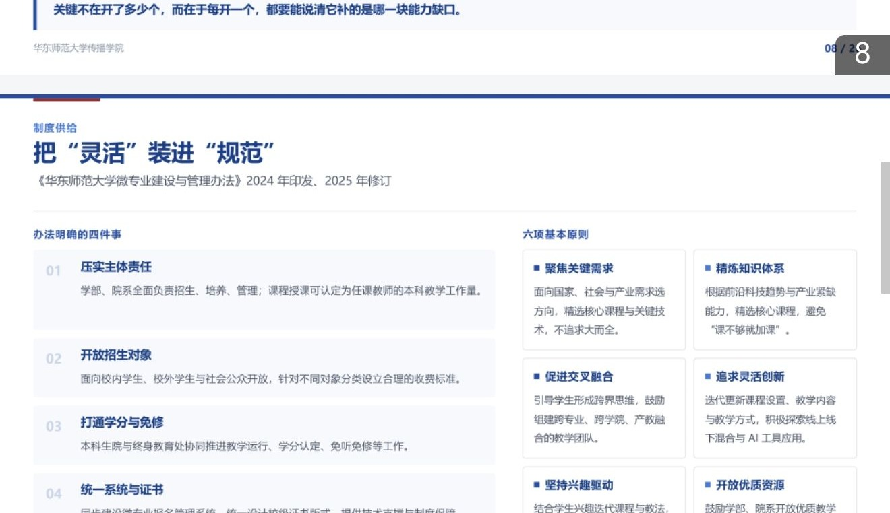
运行机制为"学部院系（责任主体）→ 本科生院（教学运行、学分认定、免听免修）→ 终身教育处（面向社会招生、非学历项目管理）→ 校级证书·学信网（统一出口）"三方协同。学校不替院系做微专业，只替院系把路修好；责任越下沉，创新越活跃。
2025 届修读毕业生去向落实率 94%（50 名修读毕业生中 6 月已落实：升学 64%、就业 30%）；2026 届 95%（106 名修读毕业生已明确去向）。案例：徐*婷（汉语言文学+创意传播微专业）入职华为；吴*（软件工程+数据驱动教学）入职上海某科技公司；闫*宝（数学与应用数学+数据驱动教学）返乡入职淅川县第一高级中学。《文汇报》要闻版《"小杠杆"微专业解锁"广而新"求职路》、《光明日报》教育周刊《微专业，增强就业硬底气》先后报道。成效指标不是"开了多少门课"，而是修读学生的去向落实速度与岗位质量。
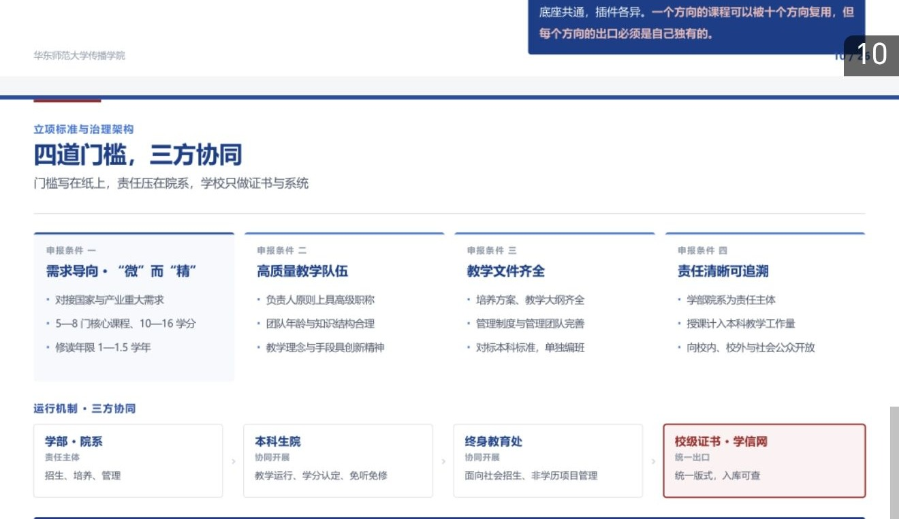
学院沿革自 1920 年上海圣约翰大学新闻系，2004 年成立传播学院；形成智能传播、融合出版、创意传播、国际传播、视听艺术传播"五元方阵"特色增长点。交叉育人的既有基础：新闻学—数据科学与大数据技术、政治学与行政学—新闻学两个双学士学位，数字媒体技术新增专业，"游戏与数字文创"交叉学科方向。学院对标《卓越新闻传播人才培养计划 2.0》，聚焦学校"幸福之花 5+"（教育+、健康+、生态+、国际+、智能+）行动计划，把智能传播与创意传播作为交叉育人的两个主要落点。交叉复合型微专业不是凭空造出来的：先要有可交叉的学科底盘，再要有愿意跨界的教师。
入口面向全校非信息类专业开放、不设先修课程、允许零基础 → 模块一 AI 基础课（5 门任选 2—3 门）→ 模块二 AI+X 融合课（2—3 门，传播场景导向）：大语言模型与创意写作（创意生成：通过和模型交互讨论学会辨析信息、优化指令；期末同时考查学生用 AI 创作作品与教师识别 AI 答卷的能力）、智能媒体内容生产（多模态生产：依托 AI 媒体工具集与 AIGC 平台，围绕数字虚拟主播、合成配音、AI 生成图像与视频展开创作）、基于大语言模型的传播实践（人机协同实务：12 讲覆盖新闻、出版、广电、广告的行业模型应用；教师由知识传授者转为学习促进者）。两端都做了让步：基础模块允许选以兼容不同基础，融合模块限定传播场景以保证出口能力指向清晰。
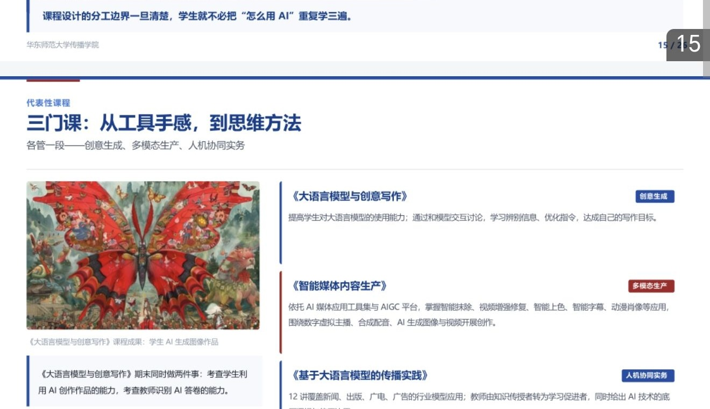
第一级 工作坊实践群落（"AIGC 跃升计划"智能创意与融合出版工作坊、数据新闻实训工作坊——低门槛、高实操，以课促赛、以赛促学）→ 第二级 融合型课程建设（三门代表课，课堂从"内容传授"转向"能力生成"）→ 第三级 特色专业升级（"AI+传播"微专业、双学士学位、交叉学科方向）→ 第四级 本研贯通交叉项目（"大语言模型与创意写作"项目、《西游记》数字地图标注项目等；研究生课程向本科生开放）。四级台阶缺一级，微专业就会退化成一门选修课：工作坊解决"愿不愿意学"，课程解决"学得会不会"，专业解决"算不算数"，贯通项目解决"用得上用不上"。起点足够低：一个工作坊、一位愿意带学生的老师，就可以开始。
学生作品（民族题材意象创作、传统市集场景生成、叙事动画风格图像与文本生成）与学生反馈（"课程的实践过程实际上也是我完成祛魅的过程。AI 是种瓜得瓜种豆得豆的结果，但人的思考不该停止在收到答案的那一秒"）是最硬的证据。学院还推出"聂小传""灵灵灵呋"创意写作智能体（2024 年 10 月在上海书城发布），此前团队已推出全国首部百万字 AI 小说。
| 办学要素 | 华东师范大学的取值 | 给兄弟院校的建议区间 |
|---|---|---|
| 选题依据 | 对接国家、产业与社会重大需求，锚定本校优势学科 | 先有学科底盘，再定方向 |
| 目标定位 | 明确写入"交叉复合型"，不与另两类混用 | 三类择一，表述要让外部看得懂 |
| 课程与学分 | 5—8 门核心课程、10—16 学分 | 宁少勿滥，政策上限为 3—10 门 |
| 修读年限 | 1—1.5 学年（"AI+X"为 1 学年） | 避开主修考核高峰，留补修通道 |
| 先修要求 | 不设先修课程，允许零基础 | 门槛越低，生源结构越多元 |
| 师资结构 | 负责人具高级职称 + 跨学院团队 + 业界导师 | 跨院组队，工作量单独认定 |
| 教学组织 | 单独编班、小班化、线上线下混合 | 混班教学可提升产教融合度 |
| 评价方式 | "认知力—技术力—创造力"三维模型 + AI 多模型盲评 | 评价指标必须与能力目标对齐 |
| 证书与出口 | 校级证书 + 学分认定 + 学信网入库 | 先打通学分，再谈证书含金量 |
| 面向对象 | 校内学生、校外学生、社会公众，分对象收费 | 开放对象越多，制度越要先立 |
建议在本研讨会框架下成立"交叉复合型微专业校际协作小组"，从三件小事做起：共享一份课程清单、互认一批学分与证书、联合开展一次质量评估。
2010 年开设双创发展课 → 2012 年 4 门山东省精品课 → 2013 年教育部首批职业发展示范课 → 2014 年山东省教学成果奖二等奖 → 2018 年山东省教学成果奖一等奖、获批首批国家精品在线开放课程 → 2020 年 4 门国家一流课程 → 2025 年数字化赋能高质量就业试点院校培育单位、教育部强国三年行动计划立德树人机制综合改革试点单位、微专业学生获中国国际大学生创新大赛金奖。三大里程碑：国内首门双创慕课（省教学成果奖二等奖）、国内首个双创微专业（省教学成果奖一等奖）、首创三谱联动机制（获国家教学成果奖一等奖）。
① 双创教育与产业实际脱节（学生实践能力弱）；② 双创教育与专业培养分割（学生专业认同感低）；③ 双创教育桥梁功能不足（尚未建立有效的双向反馈机制）——最终导致学生核心素质存在差距。
通过智能供给的慕课群、云端共建的案例库、虚实结合的实训箱，构建"慕课学习—案例研习—虚拟仿真"三段递进实训链，串联认知建构、能力内化与实践应用。产业侧（岗位数据知识图谱、产业前沿教学实景、企业任务仿真练习）与高校侧（智能推送学习模块、云端跨校共建案例、虚实结合数智工具）双向赋能。
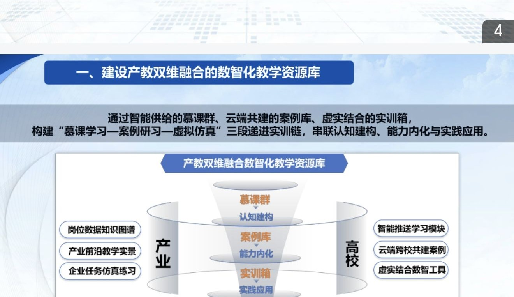
云端共建案例库：联动全国选课高校与合作企业共建产教融合案例库，将产业前沿转化为教学实景；获山东省典型案例、全国高校思政工作优秀案例；依托海尔-创新创业研究中心、海信-产教融合创新基地、京博-N1N 教学实训与科研转化基地、POKE 创新创业模拟实训中心。生涯发展与创新创业数智应用实验室：开发 23 项跨岗位数智实训工具与 126 个企业真实任务包，构建三段递进实训链。
打造"创程录"实践存证平台：学生承接企业真实问题，全流程数字化记录；企业导师、教师和学生按五维指标评分，实时生成素质雷达图（目标确定→过程培养→目标实现）。创程-微专业实践课程分两学期各 64 课时：第一学期"产生创意（线上慕课讲核心知识点）→组建团队→市场调研（线下实训+沙盘模拟）"；第二学期"产品原型（名企导师面对面，聚资源）→打磨迭代→产品发布（创业企业全接触，开眼界）"。课程体系：6 门双创慕课 + 2 门实践课 + 1 门结业设计；教学逻辑为"案例引入→理论应用→问题解决"；线下依托"创程录"发布任务、数据实时上传"司南"AI 模型生成素质雷达图、精准定位短板。
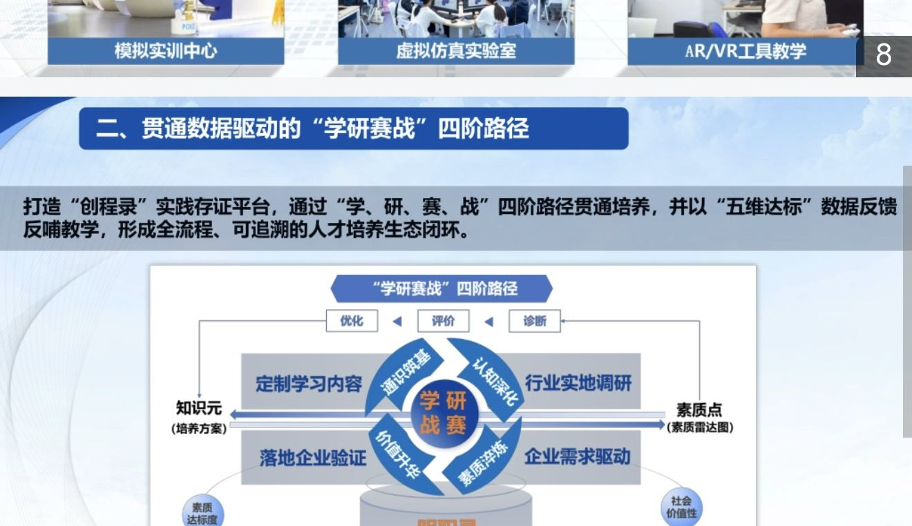
以层次分析法构建"六维核心素质图谱"，联合智慧树网开发"司南"AI 决策引擎，实时分析产业胜任图谱、专业培养图谱、学生成长图谱，输出"素质缺口→岗位适配→生涯发展"三级建议，提升人岗匹配效率。构建专业图谱：知识图谱（侧重知识组织和关联）、能力图谱（关注能力的结构和发展）、素质图谱（涵盖影响个体行为和绩效的多种因素）三谱融合；双创教育贯穿各专业必修内容，打通跨专业甚至跨高校链接，实现学生成长需求自动识别与教学资源精准推送。三谱动态联动：胜任图谱接入链主企业招聘数据库、解析文本语义、量化六维素质指标，动态生成岗位胜任图谱；培养图谱拆解专业培养方案、自动推荐课程增删调整、缩短课程更新周期；成长图谱整合多源数据训练"司南"模型、生成三级路径、实现精准人职匹配。学校据此超前预判调整课程体系，学生据此细化成长路径，实现人岗动态适配。
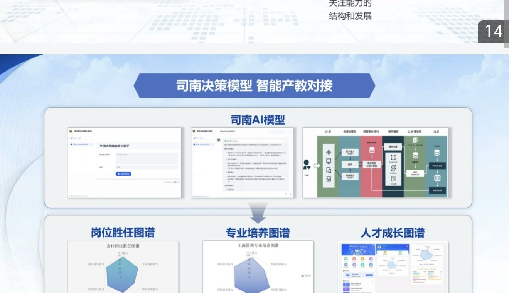
《专业社会实践导论》"践商研学"专业赛事成果：MPAcc 案例分析大赛（2025 年第十一届，国家级一等奖）、"智·慧·链"大赛（第十四届全国大学生电子商务"三创"挑战赛，国家级二等奖）、全国大学生创业综合模拟大赛（国家级特等奖）、海洋旅游创意设计大赛（中国高校商业精英挑战赛会展专业竞赛全国总冠军）、乡村振兴志愿服务技能大赛（全国研究生乡村振兴科技强农+创新大赛国家级一等奖）。作为国内首个创新创业微专业，学生获中国国际大学生创新大赛国家级一等奖；教育部 A 类赛事获奖数与保研特长加分人数显著增长（图示增长 393.3%、200.0%）；POKE 研习社入选全国高校"活力社团"精品项目。
博士论文聚焦国家战略比例达 71.1%（政策评估与优化、蓝色粮仓、产教融合、乡村发展及治理、海洋经济发展）；硕士论文源于企业实践比例达 64.2%（较此前 +128.0%）；《专业社会实践导论》获山东省高校黄河重大国家战略课程优秀案例；本/研育人模式分获山东省教学成果奖二等奖/一等奖。
离校岗位落实率连续七年全校第一，985 高校商学院唯一。培养理念升维："在不确定的时代定义自己的价值"——超越对职业的被动适应，通过人职匹配实现"产教双维（判断力）× 思专创融合（创造力）× 数智赋能（内驱力）"的人职共生。
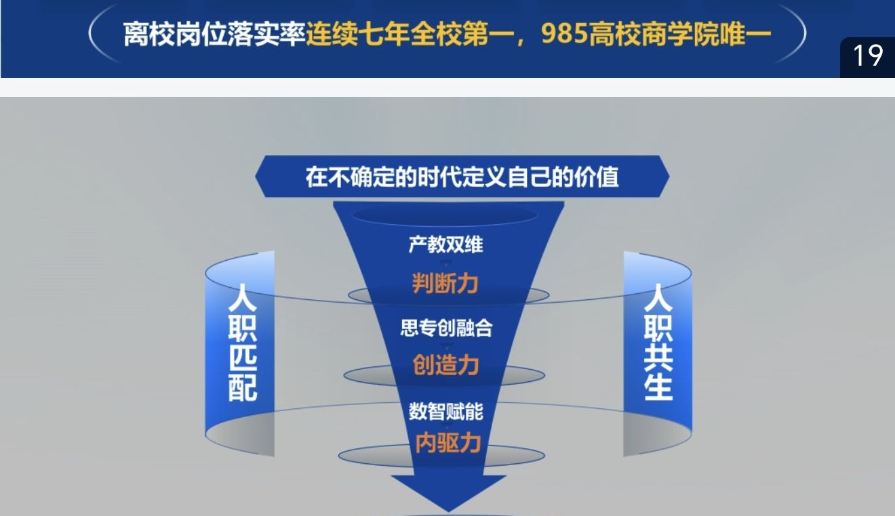
"双千"计划目标：提升就业能力、促进高质量充分就业，建设 1000 个微专业、1000 门职业能力培训课程，重点关注去向落实率低于 50%、就业质量不高的专业。微专业类型：①急需紧缺型 ②应用技能型 ③交叉复合型。
构建"国家—省—校—企"协同机制，实行微专业备案管理、学分认定及成果认证。重庆市教委发文（渝教高函〔2026〕34 号）组建重庆市高等学校微专业建设指导委员会，设综合指导委员会（微专业建设管理组）与分类指导委员会，覆盖智能车辆与新能源汽车、新一代信息技术/软件、生物医疗与生命健康、智能装备及智能制造、新材料、新型高端仪器仪表/集成电路、能源电子、人工智能、数字能源、农业粮食、生态环境、文旅、现代金融/金融科技、工业互联网、企业数字化转型、低空经济、卫生健康、文化服务等方向，由牵头高校与成员高校组成，开展研究、咨询、指导、评价、服务等工作。
| 高校 | 学分 | 课程门数 | 修读年限 | 开设数量与代表方向 |
|---|---|---|---|---|
| 上海交通大学 | 6~12 | ≤6门 | 不超过2年 | 28 个（AI+微专业、低空技术与经济） |
| 同济大学 | 12~20 | 8~12门 | 1.5~2年 | 10+（数据科学与人工智能、AI+X 等） |
| 武汉大学 | ~15 | 3~10门 | 不超过2年 | 13（人工智能、数智创新、文化数字化等） |
| 西安交通大学 | 8~15 | 5~8门 | 1~2年 | 9（人工智能、网络信息安全、数智理财与投资） |
| 华中科技大学 | 12~15 | 5~8门 | 不超过2年 | 15（聚焦人工智能领域） |
| 北京理工大学 | 8~20 | 3~10门 | 1年 | 16（人工智能、战略性新兴产业、低空经济） |
| 四川大学 | 8~10 | 5~10门 | 1.5年 | 35（智能金融、新能源、人工智能） |
| 哈尔滨工业大学 | 12~15 | 5~8门 | 1.5~2年 | 21（具身智能、智算物理、文化遗产数字治理等） |
| 南京大学 | ~15 | 5~10门 | 1.5~2年 | 16（AI+X 等） |
| 浙江大学 | 15~20 | 5~8门 | 1.5~2年 | 7+（AI+X、科技创业投资、具身智能等） |
国际经验：4—15 学分，短期、在线或混合式课程组合，获得数字徽章或证书（MIT、哈佛等依托 edX/Coursera 开展"微学位"项目）。国内对比——学分：微专业 6~20 / 辅修 25~50；专业名称：不能与本科专业名称重复 / 须为教育部规定的本科专业名称；学位：非学历证明 / 学历证明；申报方式：经省级教育部门审核后报教育部备案入库 / 向教育部申请；学信网：备案可查询 / 可显示专业；证书：微专业证书 / 学位证。微专业与辅修专业有本质区别，更注重实践动手能力的培养。
2025 年 4 月启动 → 5 月调研 → 6 月形成论证稿 → 7 月论证 → 10 月修改完善 → 11 月法制办审查并提交。经 2025 年第 35 次校长会审议通过，印发《重庆大学微专业建设与管理办法》（重大校发〔2025〕154 号），共七章二十三条：第一章总则（背景及微专业内涵）；第二章微专业建设（建设主体、方法及要求）；第三章微专业管理（相关单位和部门职责）；第四章教学运行与实施（组班、选课、排课等）；第五章证书授予（授予条件与方式）；第六章学费管理（学费标准及缴费要求）；第七章附则。
鼓励学科交叉，跨学院、跨学科、跨专业组建微专业教学团队；强调 ≥50% 实践学时，要求与科研机构、行业企业共建微专业。两种立项方式：揭榜挂帅（聚焦学生数理能力、人文素养、工程素养和国际胜任力等综合能力提升）与自由探索（申报单位根据自身学科优势结合社会发展需求自拟）。
2026 年 1 月启动建设（52→约 80 个微专业储备，覆盖"双千"建设方向 75%，15/20）。本科生院 2026 年 6 月 2 日发布《关于公布重庆大学 2026 年秋季学期微专业招生简章的通知》：微专业是围绕特定领域专业核心要素，具有"小学分、高聚焦、精课程、跨学科、灵活性"等特点的课程组合；报名人数不少于 15 人方可开班，每位同学同时修读的微专业不超过一个，课程原则上安排周末和晚上。2026 年秋季学期拟开课微专业共 42 个，方向涵盖：数字经济与治理、城市数据科学与智能交通系统、数智社会治理与AI决策、智能金融、数智项目管理与领导力、供应链数智化运营管理、智能财务、资产运营与管理、智能科技交流与国际传播、国际胜任力、数智视觉艺术工程、未来出行设计、短视频制作与运营、出口管制与合规、人工智能+、大数据智能化与决策、材料智能化设计与制造、低维材料、机器人与智能装备、人工智能应用、创意写作与文化创意产业、无人机技术及应用、生物建造、输电工程、智慧水务、城市低碳智慧管理、智慧生态工程、医药与健康、AI化学与智能制造、新能源高分子复合材料、碳中和科学与技术、合成生物学、低空技术与工程等。
示例一"数字经济与治理"微专业（公共管理学院）：回应数字时代对数字经济与数字治理的迫切需求，培养"理论+技术+数据"的高素质复合型人才——紧扣国家发展战略与数智经济需求、具备经济学理论功底、训练判断性思维与实战能力。示例二"数智化项目管理"微专业（管理科学与房地产学院）：紧扣数智化发展浪潮，依托重庆大学 PMBOX 知识体系，融入数据技术、敏捷管理实战能力培养，结合经典案例演练、翻转课堂与实战模块。
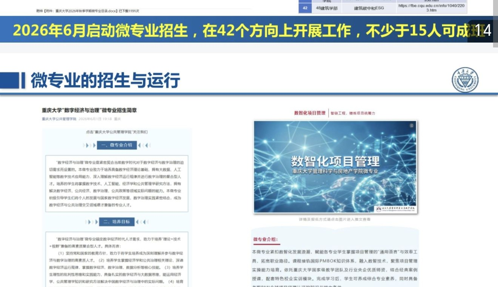
2026 年秋季实际开课 16 个：AI化学与智能制造（化学化工学院）、城市数据科学与智能交通系统（公共管理学院）、创意写作与文化创意产业（博雅学院）、短视频制作与运营（新闻学院）、国际胜任力（外国语学院）、人工智能应用（计算机学院）、生物建造（土木工程学院）、数智化项目管理（管理科学与房地产学院）、数智视觉艺术工程（艺术学院）、碳中和科学与技术（资源与安全学院）、文旅空间数智创意与运维（建筑城规学院）、无人机技术及应用（土木工程学院）、新能源高分子复合材料（化学化工学院）、智能财务（管理科学与房地产学院）、智能科技交流与国际传播（外国语学院）、资产运营与管理（管理科学与房地产学院）。修读学生约 350 人，本科生与研究生比例为 7:3。
规划 100+ 个微专业，构建"（主修专业 + 微专业）+ 辅修专业"的人才培养体系。面向发展需求（就业、创业、升学、深造、跨领域发展、个人兴趣）建设微专业体系：急需紧缺型、应用技能型、交叉复合型，涵盖综合素养、人工智能+、跨领域技能、科研能力、数理提升、跨文化交流、人文素养、创业能力、职业规划等。
本科培养方案四年一个周期（有的学校规定四届保持稳定）；培养目标聚焦毕业五年后（即九年后达成情况）；毕业要求对应毕业当下的知识、素质和能力（四年后达成）；课程体系对标上述目标；课程和教材进一步滞后——从产业实践到教材出版周期至少 3 年。传统培养模式跟不上产业变革是必然的。
关键词：面向就业、产业区域适配度、企业人才需求、人工智能+、动态迭代、学信网。
浙江从"资源小省"到"开放强省"经历 4 次系统性跃升："资源小省"→"外贸大省"→"开放大省"→"开放强省"→"高能级开放强省"。从"买全球、卖全球"的义乌实践，走向企业出海、先进技术出海、服务出海、规则出海、文化"新三样"出海；中国国际化程度前所未有提升，出海企业本土化人才和外派人员需求量前所未有增长。浙江"数字经济"战略始于 2003 年、2017 年成为"一号工程"；"杭州六小龙"（深度求索 DeepSeek、宇树科技、游戏科学、群核科技、强脑科技、云深处科技）是新质生产力的生动样本。
| 总体布局 | 具体内容 |
|---|---|
| 24 个"双千计划"微专业 | 全部通过教育部"双千计划"备案，学信网可查、结业证书权威可信 |
| 843+ 名学生修读 | 学分替换、错峰排课、不计绩点，纳入综测加分，柔性修读体系 |
| 50+ 家优质企业支持 | 阿里巴巴、科大讯飞、远大国际会展等，"企业出题、高校解题、市场检验" |
| 100+ 万元/年投入 | 用于学生出海实践、企业导师聘任、专业建设；微专业负责人绩效、课程工作量绩效拨款 |
| 方向 | 数量 | 微专业 |
|---|---|---|
| 特需语种语言服务 | 4 | 实用乌尔都语、实用泰语、实用印尼语、AI赋能的小语种极速习得（俄、法、西、德） |
| 人工智能应用 | 5 | 教育智能应用、商务智能数据分析与应用、语言智能综合应用与实践、语言智能教育工程师、智能创意设计 |
| 商务贸易 | 5 | 涉外知识产权、AI商务智能决策、数字服务贸易与出海合规实务、智能出展与全球商业连接、跨境电商直播 |
| 国际传播 | 5 | 文化产品出海、中文教育与全球表达、多语种内容出海与本地化（动漫方向）、高端智能语言服务出海传播、国际组织与全球治理 |
| 文化旅游 | 4 | 音乐剧微短剧创作与表演、研学旅游、数智审美与文化创新、家庭教育指导与咨询 |
| 生命健康 | 1 | 体育健康管理 |
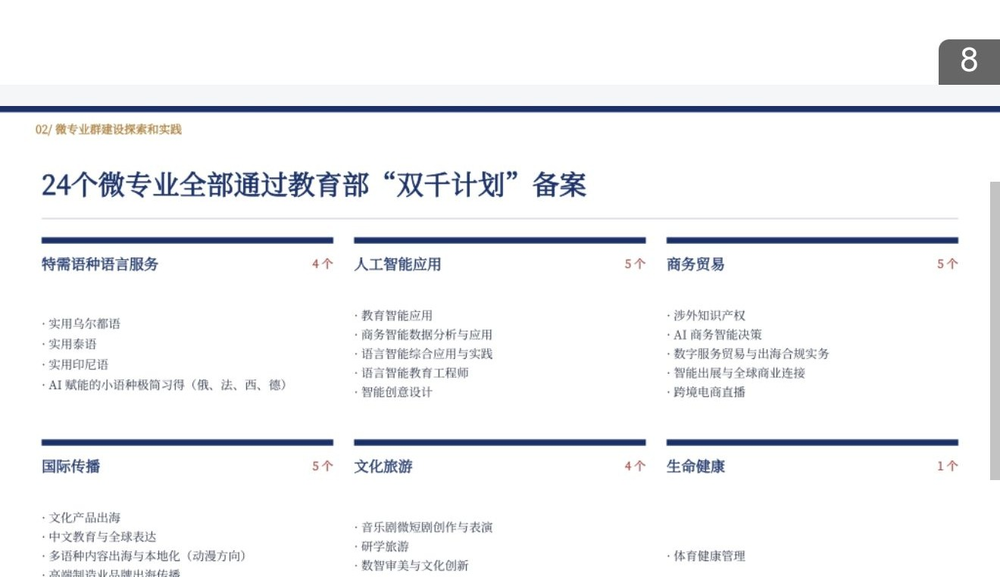
"小紫苏"智能学伴：浙外自研智能体（智能伴学+口语大模型+现代化语料库），支持作文智能批改、口译音频智能分析、口译水平多维智能评估、联网搜索整合信息。微专业证书：实物证书盒（校训"明德弘毅 博雅通达"）+ 统一编号证书，2026 年 6 月首批发放。运行机制：学校统筹、学院主办、团队落地——制度上出台《微专业建设与管理办法（试行）》，明确"十五五"期间建设、引进 50 个以上微专业目标；机制上教务处统筹规划评审、评估中心监控评估、二级学院教学副院长牵头组织、微专业团队负责落地；激励上将微专业负责人视作校级新专业负责人纳入结算考核，课程工作量等同普通课程参与年终绩效分配；学生免学费、错峰排课、纳入综测加分、学信网可查。学生调研：开放修读前对 1193 名学生问卷——修读动因：就业竞争力提升 77.54%、兴趣爱好 57.25%、职业规划匹配 53.56%、证书获取 43.76%、辅助主修专业学习 35.46%、能否接触实践 34.28%、其他 1.26%。
| 环节 | 做法 | 破解的痛点 |
|---|---|---|
| ① 需求前置研判 | 岗位倒推专业，动态锚定出海岗位：制度供给（新建修订校级微专业系列管理制度、跨校修读学分置换规则、共同体工作指引）；调研体系（"白皮书+企业问诊+岗位清单"常态化调研，面向跨境电商、国际传播、文化出海、数字贸易、非通用语种五大赛道）；反哺机制（微专业迭代反哺主修专业升级） | 传统专业迭代滞后 |
| ② 校企全链共建 | 企业出题、高校解题、双师授课、项目实践：引入吉利等浙江出海龙头企业真实业务项目作为项目化学习载体；"校内主讲+企业导师"双师授课，考核重心转向行业见识与项目成果；校企共同开展学业评价，构建互惠共赢的长期合作机制 | 校企合作短期化 |
| ③ 产教共同体合力 | 跨校跨行业联盟：借鉴北京沙河高教园区、"华五"高校联盟经验；联合省内 3 所以上兄弟高校与多家龙头企业共建"企业出海微专业建设共同体"；实现跨校课程共享、学分互认、联合发证、项目制学习团队 | 跨校协同落地瓶颈 |
| ④ 激发内生动力 | "教务抓质量、继教做运营"分工格局：教务处管培养方案、课程标准与教学质量；继续教育学院管对外招生宣传、跨校选修收费、学员管理；校内修读免费、跨校选修有偿收费实现自我造血；完善教师绩效激励 | 运行经费薄弱 |
| ⑤ 闭环质量管控 | OBE 导向全周期管理："申报→建设→评估→迭代→退出"；三大核心考核指标：产业适配度、校企评价、就业质量；师生+企业+毕业生三方联合评估，优胜劣汰——成效突出者增加经费，招生不足、匹配度下滑、质量不达标者限期整改、暂停招生直至撤销 | 质量管控缺退出机制 |
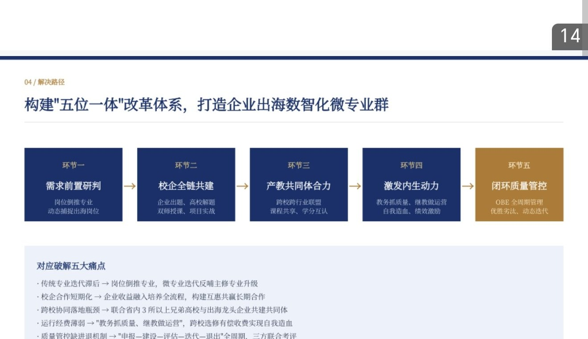
微专业是大学主干专业之外，围绕某一特定学术领域、研究方向或核心素养提炼开设的一组核心课程。传统专业存在三大局限：培养目标单一（专注单一学科深度，存在学院学科壁垒，缺乏与 AI 等前沿技术的系统性融合）、课程体系固化（体量大、周期长、惯性大，无法快速响应技术发展和产业需求）、培养规模受限（资源集中、名额有限）。微专业的必要性在于三点：敏捷性（课程模块化、轻量化，快速建课迭代，缩短人才培养从实验室到工业界的距离）、精准性（聚焦核心课程，1—2 年内获得特定领域"硬核"实战能力）、复合性（为非专业学生插上跨专业技术翅膀，实现"专业深度+技术宽度"转化）。微专业并非取代现有专业，而是提供一套低成本、高效率的"知识升级包"，成为快速培养国家战略急需人才的重要补充路径。
2018《教育部关于加快建设高水平本科教育全面提高人才培养能力的意见》起持续鼓励；2021《"十四五"教育发展规划》明确"探索微专业、微课程等新型教学模式"；2025 年"双千"计划（1000 个微专业分急需紧缺型/应用技能型/交叉复合型三类 + 1000 门职业能力培训课程分基本素质提升/专业技能训练/人工智能应用/实习实践四类）。人才侧：AI 相关岗位增长 2023 年 8.45% → 2024 年 36.52% → 2025 年 74.13%；AI 新发岗位量年增 10 倍、简历投递量年增 11 倍，AI 招聘薪资高于平均薪资——AI+复合型人才缺口持续扩大。
目标："微专业"精准赋能"主专业"，培养复合型人才。课程体系 What：4 大板块、7 门课程、10 学分——先修课（不占学分、学生自修：大学计算机基础、离散数学）→ 基础课 6 学分（人工智能导论、算法设计与分析、机器学习含深度学习）→ 专业课 3 选 1、2 学分（模式识别与机器视觉 / 自然语言处理与大模型 / 智能控制与机器人）→ 微毕设 2 学分（科研课堂，综合运用 AI 技术解决学生主修专业问题）。
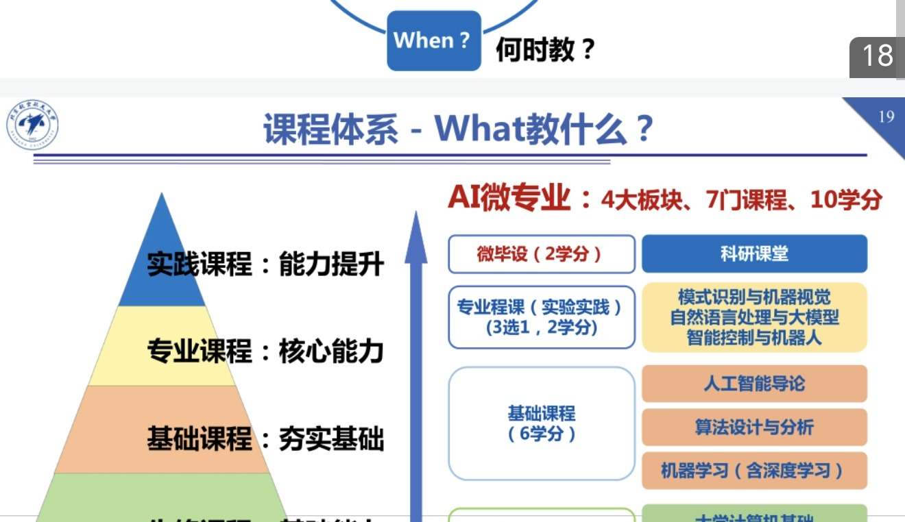
《算法设计与分析》：国家级线上一流本科课程，中国大学 MOOC 与融优学堂开课 10 期，累计选课 81217 人，一学期内 2 次被中国大学 MOOC 官网置顶，评分 4.8 分；模块含分而治之、动态规划、贪心策略、图算法四大篇章。微毕设（科研课堂）：三位一体"TOP"计划——科研导师（Research Tutor）、实验室开放日（Open Day）、微课题（Mini Project），规格化为课程、纳入培养方案，大二大三全覆盖、必修 2 学分；50 余个开放重点实验室、2141 门次课程、500 余名科研导师、11000 余名本科生参与、省部级重点实验室开放率 100%。《自然语言处理与大模型》：重点教改项目支持，六大模块（大语言模型基础、模型构建流程、预训练、微调（SFT/LoRA）、人类对齐（RLHF/DPO）、大模型应用（RAG/Agent）），引入 GPT-4、Gemini、ChatGLM、Qwen3、ERNIE 5.0 技术报告；学生科创成果：鸾霄—遇感应减灾大模型（挑战杯主赛道）、多模态深度推理大模型的自适应学习路径规划、智明堂大模型（中医执业医师资格考试）。《人工智能导论》：8 大模块 24 课时理论（AI 发展历史、脑神经科学与认知基础、机器学习概述、深度学习概述、机器人智能感知、机器人智能认知、大模型智能决策、人工智能伦理）+ 编程基础 4 学时 + 信息/航空航天/理科/文科四大类综合实践各 12 学时。
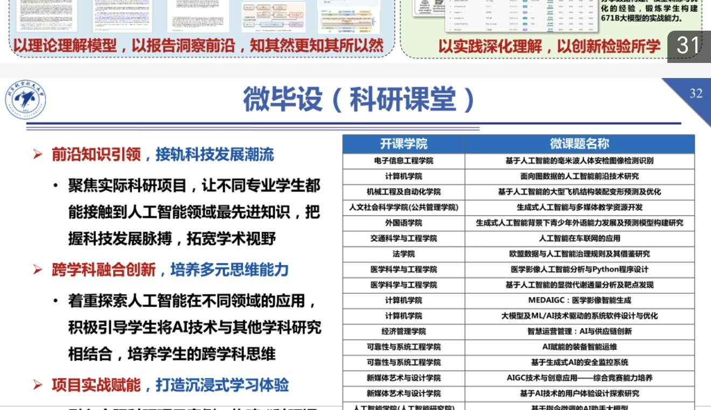
以新版培养方案修订为契机，顶层设计多元化培养模式，促进微专业等复合型人才培养；创新多元化人才培养模式，支持学生多路径成才成长。
北航牵头北京沙河高教园区高校联盟，首批 8 个共享微专业：人工智能（北航）、生态环境数字孪生与智慧技术（北师大）、6G 移动通信（北邮）、金融学（央财）、安全工程（矿大）、外交学（外交学院）、智能信息通信技术（北信科）、数字人文（北科）、碳管理（华电）（表中列 8 校 9 专业）。关键规则：每位学生仅限报名一个微专业；报名分报名、审核及抽签、补选三阶段（2025 秋季：报名 8.30—9.12，审核抽签 9.13—9.15，补选 9.16—9.20，选课即选即中 9.24—9.27，十一假期后开课）。各微专业学分 10—16 分不等（金融学 14 学分 224 学时、数字人文 16 学分 256 学时），授课方式为线上+线下或纯线上。
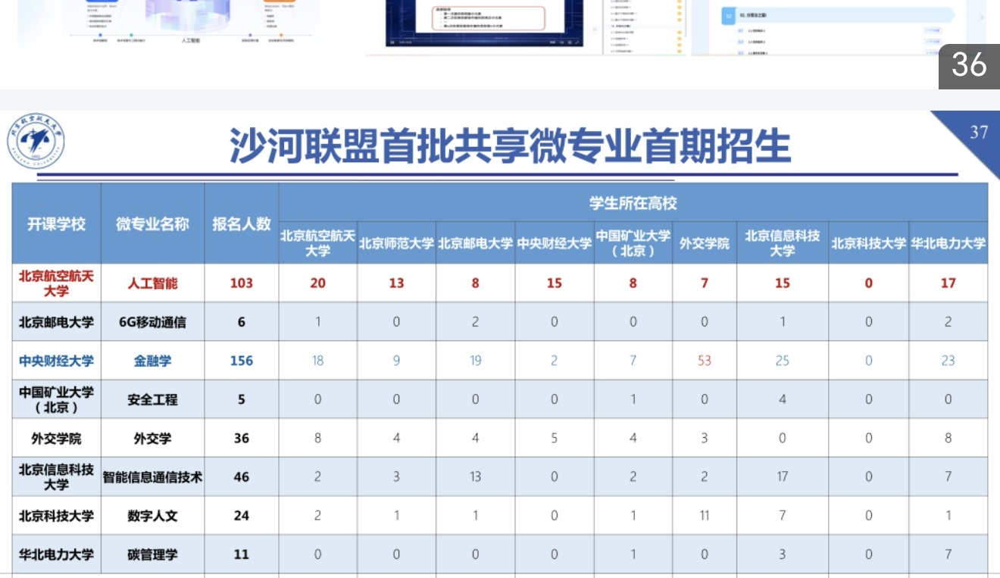
人工智能微专业开课选课情况：2025 秋季算法设计与分析 23 人、机器学习 20 人；2026 春季人工智能导论 6 人、算法设计与分析 11 人、计算机视觉 3 人、大语言模型从理论到实践 3 人、智能控制与机器人 8 人；合计 74 人（北航 17、北师大 6、北邮 6、央财 13、矿大 10、外交学院 6、北信科 4、北科 0、华电 12）。结论：AI 微专业选课 103 人远超原计划的 30 人，最终实录 40 人；基础课小班化，专业课三选一人数变少；第二轮累积人数预期增多。全过程管理平台（+超星）：全流程管理（涵盖缴、管、教、学、考、评、证）；全 AI 赋能（智慧课程→智慧实践→智慧考试）；全电子证书（集齐联盟高校证书，电子加密、灵活组合）；全渠道推广（联盟内试点运行，后续逐步面向社会开放）。
构建"通用+特色"的 1+M+N 人工智能课程体系：1 门人工智能通识导论课（分类、强基础、重实践）→ M 门"人工智能+"专业课程（建工具、汇资源、提场景：课程知识图谱、资源智能推荐、AI 辅助教学、智能分析管理）→ N 个 AI 微专业；智慧课程牵引混合式教学模式创新，数字教材深化虚实融合学习模式升级，打造系列一体化、多模态交互的 AI+专业数字教材集群。
教育部"双千"计划微专业线上注册审核结果陆续公布，多校微专业入库"双千"计划，微专业在学信网可查将逐步普及。页内案例：浙江 708 个专业点入选教育部"双千"计划；福州外语外贸学院乡村治理微专业备案通过并可在学信网查询证书；深圳某校 6 个微专业通过备案；某校 64 个微专业通过遴选；辽宁省多校微专业已入库"双千"。
微专业面向：新兴领域、前沿科技、交叉学科、产教融合、多样化发展、兴趣学习。四字诀——精（课程数量少 3—10 门、课时数少、内容精品）、尖（聚焦战略性新兴产业、科技前沿、动态更新）、跨（跨专业、跨学科，促进学科交叉融合）、融（产教融合，行业领军企业合作开发）。优质微专业价值：新专业、新课程建设的试验田｜技能提升｜个性化学习｜拓展就业面。
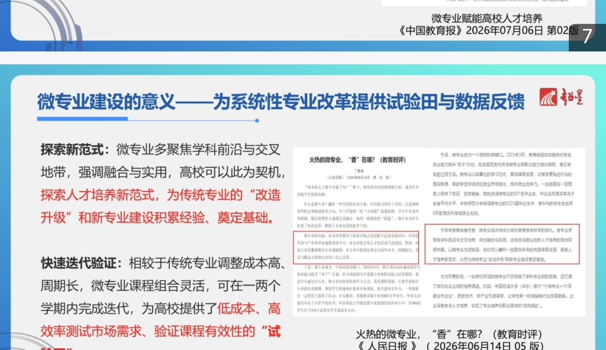
数智化解决方案总体框架：1 微专业管理（微专业管理平台）；2 微专业建设（数据服务、智慧为体、智能为翼、案例分享）；3 微专业运营（微专业跨校运营）。
全流程闭环：微专业培养方案建设 → 申报与审批 → 开班 → 运营推广 → 报名缴费 → 教学管理 → 评价管理 → 成绩管理 → 证书发放 → 统计分析。
超星已协助多所大学搭建微专业管理服务平台：海南大学产业微专业——构建以"45432"产业体系为导向的微专业群（四大主导产业、五大现代服务业、四大未来产业、三大设施服务、两大贸易港湾）及四新未来产业微专业群；武汉大学（人工智能微专业门户）；晋水学院（非遗活化与 AIGC 文旅应用微专业）；天津大学（微专业建设与管理智慧系统）等。
平台支持关联网络课程、收费、退费、统计分析等，支持微专业从立项到评价管理全流程。业务建设成效：学生约 300 人、教师 169 人、课程 230 门（含面授及网络课）；2025 年第一批次开通 17 个微专业批次、2026 年第二批次开通 30 个微专业批次；实现招生报名、培养管理、过程督导、成果归档的全流程数字化管理；共 9 个人工智能方向微专业入选教育部"双千计划"，学生修读合格后可实现学信网成果备案。成绩单示例（人工智能实践课）：Python 编程及应用 32 学时/2.0 学分/90 分、人工智能通用系统 32/1.0/90、AI 科研工具 32/1.0/92、生成式人工智能实操 32/2.0/91、人工智能通识 32/2.0/90。
课程由浙江大学、复旦大学、上海交通大学、南京大学、中国科学技术大学、同济大学等高水平教师，与百度、商汤等头部企业联合授课；设基础类、核心类、交叉类、实践类课程。设置原则：打破高校、院系、专业学科壁垒；算法实践类课程每门 1 学分，由华为、百度、商汤、英特尔等名企与高校教师合作开发。五校联合颁发"AI+X 微专业辅修证书"。五条运营线总览（以学生为中心、教学为支撑、数据为纽带、规则为保障、产品为引擎）：①学生运行线（招生名单导入→学生入驻→按学期选课→课程学习→考核→成绩发布→学分累计→学分认定→成绩输出）；②教学运行线（课程加盟→学期启动→教师培训→教学要求发布→课程团队对接→教学运行→考核组织→成绩确认）；③成绩数据线（平台成绩产生→成绩导入→成绩发布→成绩单生成→教务系统流转→学分累计→毕业判断）；④异常处理线（退补费处理→缓考申请→缓考审核→缓考/重修管理→重修选课→补考/结业考核→结果更新→特别延期）；⑤产品迭代线（需求收集→需求梳理→产品方案→开发测试→上线验证→运行反馈→持续优化）。沉淀的运营资料：学生/教师/成绩设定操作手册、分学期教师培训资料、选课与考试通知、成绩单与证书模板、学分统计及毕业判断规则、缓考台账、产品需求与测试记录等——使项目逐步从依赖个人经验解决问题，向流程、规则、文档和产品共同支撑转变。
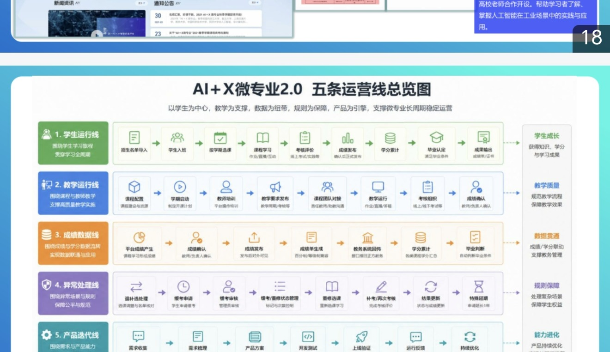
设计阶段：①前期规划与论证（需求调研、顶层设计、可行性论证）→ ②人才培养方案研制（方案框架搭建、能力目标拆解、方案评审完善）→ ③课程体系开发（课程遴选设计、资源整合建设、课程衔接优化）；实施阶段：④教学实施与技术赋能（教学准备、学习过程管理、技术工具应用）→ ⑤实践与产教融合（实践环节设计、产教协同对接、成果产出验证）→ ⑥结业与成果认定（结业考核、学分与证书认定、成果总结）→ ⑦运营推广与质量优化（招生与宣传、教学质量监控、持续迭代升级）。要点：围绕培养目标构建"核心课程+实践模块+综合应用"的培养结构；利用 AI 等工具完成备课、过程管理、学习任务设计；联动企业引入导师与项目资源；完成学分互认流程。
岗位数据分析：从互联网采集海量招聘信息（58 同城、前程无忧、BOSS 直聘、智联招聘、猎聘、各省级人才网、事业单位招聘信息等），通过数据清洗和信息挖掘分析专业岗位人才需求，生成岗位能力模型（NEW）——技术能力、素质能力、工具能力三维度。产业数据分析：以南京工业大学对接江苏省"1650"产业体系为例，构建"产业集群→重点产业链→支撑专业→合作龙头企业"图谱（新能源产业的光伏、风电、氢能、储能四链及对应支撑专业与中天、隆基、华润电力等龙头企业）。南京邮电大学 AI+微专业岗位能力图谱与校企协同培养流程：①产业岗位需求获取 → ②岗位信息整理与能力提取 → ③职业能力图谱构建 → ④课程能力映射与能力差距诊断 → ⑤微专业课程重构与项目化教学设计 → ⑥校企联合培养实施 → ⑦学生能力评价与教学效果反馈 → ⑧能力图谱和课程体系动态更新；高校（学科优势、师资团队、教学资源、科研平台）与企业（一线岗位需求、前沿技术、课程资源、真实项目场景、就业渠道）双向奔赴，形成岗位需求—能力图谱—课程建设—校企培养—反馈优化的闭环机制。
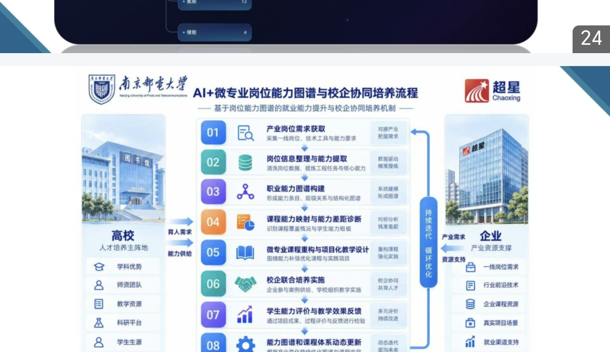
以药学智能创新实验课程群为例：专属课程建设内容（视频资源、虚拟展厅、AI 应用、多模态图谱、数字教材、实践基地、课程地图）；知识图谱（思维图谱、案例图谱）+ 学情分析 + 任务引擎 + AI 实践；知识教学体系（系统的知识脉络、真实的案例分析、无声的思政融入）与实践教学体系（行业/专业/课程实践项目）相结合；以 AI 创新为主线，将零散知识构建成完整课程体系（通药、精算、融智、决案四大能力圈）。AI 能力清单：AI 实践、AI 出题、AI 视频理解、AI 文献阅读、AI 课件、AI 教案、AI 图片生成、AI 助教、AI 组卷、AI 陪练、AI 学情分析、AI 公式识别、AIGC 检测等；资源侧对接医药行业报告、卫生健康政策、临床路径、药物知识、医学图书等。
任务引擎通过数据驱动、自适应交互和资源整合推动项目式教学：汇聚实践、问卷、章节、实验、考试、课程、作业、线上课堂、知识点，输出多元教学模式、个性化学习、精准评价。基于任务引擎灵活组织学习任务，积极推行项目式、案例式、实践式、研讨式、参与式教学；路径：项目式学习→案例式教学→实践式教学→混合式教学→结合微专业、辅修专业、岗位技能学习、证书学习。支持达标标准设置（所有任务点必须完成、测验成绩达标 100%、作业成绩达标 80 分、考试成绩达到 60 分等）与多种任务地图模板（含"血细胞探秘之旅"3D 任务岛）。项目化教学样例（ABCD 目标法）：项目一"智慧农业物联网部署"——学生（A）在给定的场景下（C）创新设计并部署一套完整的企业物联网数据采集系统（B），系统数据采集准确率 ≥95%（D）；分解为农场需求调研、传感器选型与布点、网络与网关部署（LoRa/ZigBee 组网）、系统联调与数据验证四个任务，分别交付需求分析报告、选型方案图、网络拓扑图+平台 Demo、系统测试报告，配套分组任务/方案评审/实操考核/AI 实训等评价方式与知识点映射。
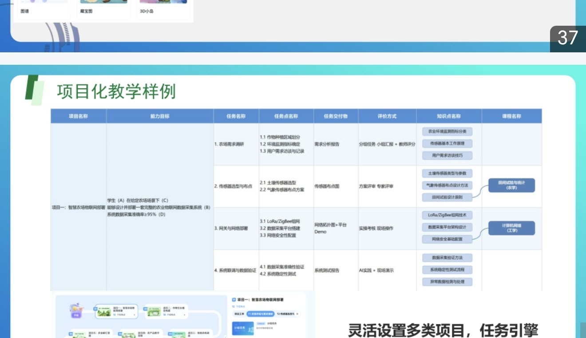
个性化学习：根据面向学生层次，将课程内容整合为符合多个不同群体要求的任务，按分组/选人发放给不同教学对象，支持分支学习路径模式。精准评价：统计参与任务学生数量、任务点数量、学生完成任务情况等（示例：参与 100 人、任务点 15 个、完成率 71%，附学生明细表）。
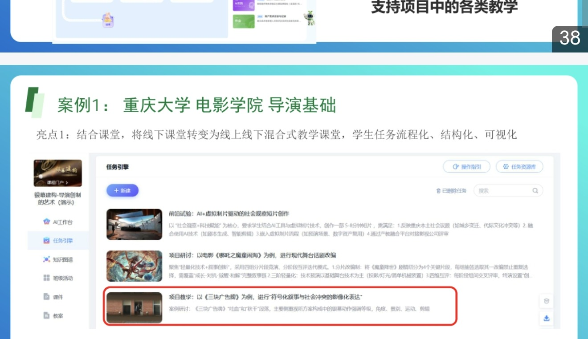
将 AI 实践与任务引擎结合，建设可实践的、可控的、能力导向的过程性学习任务。示例：成人心力衰竭患者护理病史采集与病情判断训练（情景对话）→ 提交作品"高血压性心力衰竭、NYHA II 级、高跌倒风险患者护理计划"→ AI 评估（内容完整度 25 分、逻辑清晰度 25 分、个体化特质 25 分，总分 88 分并附改进建议）；护理要点示例：生命体征监测（持续心电监护，警惕心率低于 60 次/分或血压低于 90/60mmHg）、心力衰竭症状观察（每日记录体重变化）。
将药物研发全链条进行教学任务串联，跨课程、跨学科交叉融合项目式教学，本研贯通一体化教学设计。示例"药效评价全流程学习——阿尔茨海默病治疗"：项目一 依库珠单抗研发 → 项目二 抗体制备与优化（设计结构、设计方案、细胞株筛选、评估）→ 项目三 药效评价（实验设计）→ 项目四 临床试验与上市（整合药效/药动/安全性数据形成上市申报、撰写注册申请资料、设计临床试验方案、成果展示答辩）；配套《药事管理学》章节与名师讲堂。
四大板块：AI 知识库建设（多个专属知识库）；AI 智能体（AI 实践、AI 应用、个性化智能体、专业智能体等）；创新创业微专业门户（自主化管理、助力持续优化推广，门户地址 jldxcxy.mh.chaoxing.com）；全流程管理（微专业管理平台支持）。AI 知识库是微专业教学发挥数智赋能的底层支撑：《创新创业管理》课程知识库、《创业基础与案例》课程知识库、案例/经验知识库、微专业知识库（多课程交叉知识、行业应用案例、微专业发展动态等），底座为 DeepSeek、汇雅大模型等 + 云平台部署，动态更新、持续迭代。微专业专属智能体：商业计划书智能体、商业模式画布智能体、SWOT 分析智能体、PEST 分析智能体。